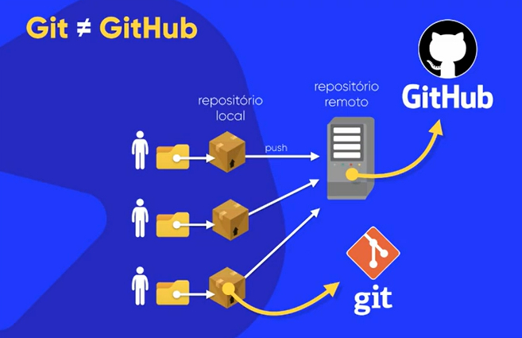

O Git é um software de controle de versão (VCS). O versionamento utilizado no Git, basicamente, é de código, mas podemos fazer versionamento de outras coisas também.
Um exemplo de versionamento pode ser de um site criado, por exemplo, no qual os arquivos HTML ficariam dentro de uma pasta dedicada ao mesmo, e dentro dela podemos ter outras pastas para CSS, Javascript, arquivos de imagem, mídia, etc.
Para mostrar uma prévia pra um cliente, por exemplo, podemos compactar essa mesma pasta num ZIP, por exemplo, mas à medida que vamos fazendo atualizações nesse site, podemos acumular muitos ZIPs, que pode ser difícil pra procurar uma versão anterior especificada. Podemos fazer o back-up em uma nuvem, como o Google Drive ou o Dropbox, mas isso torna complicado para encontrar determinadas coisas em versões anteriores.
Isso complica ainda mais quando temos muitas pessoas numa equipe trabalhando num mesmo projeto (como por exemplo, um pra design, um pra front-end e um para back-end). É aí que o Git entra.
O Git é como uma máquina do tempo
, ele permite voltar a um ponto específico de um arquivo, e ele só armazena as alterações que são feitas num arquivo, e não várias versões do arquivo inteiro (por exemplo, ao alterar um HTML adicionando duas linhas, ele só faz a atualização dessa alteração, e não uma outra cópia do mesmo arquivo atualizado).
Num versionamento centralizado ou linear, vários usuários fazem a alteração de um mesmo projeto que fica num mesmo servidor (que vamos chamar de commitar
). Já o Git utiliza o sistema distribuído, que cada equipe commita seu projeto no seu computador, no caso, isso é um versionamento local, mas ele pode ser ligado a um repositório remoto único no qual os usuários farão o push
de seus repositórios locais para ele ("push" seria o mesmo que enviar).
Veja a imagem de um exemplo:
As principais vantagens do versionamento são essas:
O Git, exemplificado anteriormente, é o repositório local onde guardamos
as versões do arquivo, nas quais ele só salva as alterações com os commits
, ao invés de fazer cópias de arquivos com as alterações.
O GitHub é o repositório remoto no qual nós salvaremos nossos projetos versionados no Git. O GitHub é uma plataforma social para programadores, tal como uma rede social, onde, além do versionamento, nós podemos participar de projetos de outros usuários e seguir perfis tais como uma rede social mesmo.
No GitHub, podemos ter:
Além do GitHub, temos também o GitLab, BitBucket, Phabricator, Gogs, Kallithea, entre outros.
Primeiramente, faça o login no GitHub Desktop indo em Files, Options e em Account, clique em Sign into github.com. Ele abrirá o navegador padrão do sistema para que o login possa ser feito.
Só relembrando, lembra do caso onde cada desenvolvedor de um projeto realiza seus commits em seus computadores locais com o Git. Depois todos eles fazem o push para o repositório remoto no GitHub.
No GitHub Desktop, vamos criar um repositório de exemplo (como Ola-Mundo, evite acentuações e espaços). Clique em Create a New Repository on Your Local Drive e ele criará um repositório Git no seu computador. Marque a opção Initialize this repository with a README. Não se preocupe no momento com o Git Ignore e o License (mas nessa podemos escolher uma licença como a GPL ou a Apache.
No caso, ele criará um repositório local onde colocaremos nossos códigos. Nessa mesma pasta criada, tem um diretório oculto com o nome .git
onde nós temos os dados do repositório.
PS: Pode ser que tenhamos que configurar o usuário para realizar os commits, nesse caso abrimos o Open Git Settings (ou indo e File e Options) e em Git colocamos o nome e o e-mail do usuário, além do branch principal padrão para novos repositórios (como master ou main).
Ao criar o repositório, ele já fará um commit automaticamente, mas podemos desfazer ele clicando em Undo. Podemos ver em History para ver as alterações feitas no repositório. Para fazer um commit no repositório local, coloque o nome dele e clique em Commit logo abaixo.
Para publicar o repositório remotamente no GitHub, vá na parte de cima do GitHub Desktop e clique em Publish Repository. Ele pedirá o nome e a descrição, e se o repositório sera privado (se quiser ele público, basta desmarcar essa opção). Um repositório privado pode ter até 3 colaboradores, já um público a quantidade de colaboradores é ilimitada.
PS: Podemos abrir o repositório local no VS Code ou Sublime Text para editar os códigos dos programas. Outras IDEs também costumam ter integração com o Git.
Abrindo um arquivo, como o ReadMe, podemos editar ele, e o GitHub Desktop já perceberá as alterações e sugerirá fazer um commit, então fazemos o commit colocando o nome dele, e ele já estará atualizado localmente. Para publicar no repositório remoto vinculado, clique em Push Origin.
Podemos alterar os arquivos diretamente no site do GitHub, podemos por exemplo editar o README e clicar em Commit Changes. Coloque o motivo do Commit e escolha a opção Commit Directy to the master Branch. Futuramente podemos criar outras branchs para o mesmo projeto.
Para atualizar nosso repositório local, que teve alterações, clique em Fetch Origin, e depois que ele terminar, em Pull Origin para ele puxar o que está no repositório remoto para o nosso repositório local.
Para atualizar o repositório local com as alterações do repositório remoto no GitHub, clique em Fetch para ele buscar os dados, e se tiver alguma alteração, ele mostrará a opção Pull (puxar) ou Push (enviar).
PS: As opções de Fetch, Pull, Push, entre outras, estão no menu, em Repository. Também não é recomendado fazer os commits no branch principal (no caso, o master).
Para clonar um repositório (que pode ser de outro usuário), nós abrimos a página do GitHub onde está o repositório, como esse aqui: https://github.com/gustavoguanabara/html-css
Podemos baixar diretamente como ZIP ou usando as linhas de comando, mas como estamos utilizando o GitHub Desktop, podemos copiar o link do Git e colar no programa, em Clone Repository, mas podemos clicar diretamente na opção Open with GitHub Desktop que ele abrirá o repositório para ser clonado pro seu computador. Ele copiará absolutamente tudo que está no repositório especificado.
Lembrando que nós não podemos alterar diretamente um repositório de outras pessoas, para isso devemos usar Issues, que aprenderemos mais pra frente.
PS: Para saber se uma pasta estiver versionada, basta ver se ele tem a pasta ".git" oculta na raiz dessa pasta.
Para pegar um projeto antigo e versionar ele com Git, abra o GitHub Desktop, clique em File e em New Repository, da mesma forma, coloque o nome do repositório como antes. Caso você tenha uma organização, você pode escolher ela (isso é só pra quem tem empresas cadastradas no GitHub). Daí é só arrastar os códigos para a pasta do repositório e o GitHub Desktop já vai identificar as mudanças.
PS: Caso tenha algum arquivos inútil na pasta, podemos excluir ela no GitHub Desktop, no caso ele vai criar um arquivo oculto com o nome .gitignore onde ele vai ignorar os arquivos especificados. Daí, é só fazer o Commit e o Push pro repositório remoto.
Daí, num outro computador, podemos clonar o repositório como já aprendemos, clicando pra abrir no GitHub Desktop e ele abrirá o programa para clonar. Só lembrando que quando você clona um repositório, ele só é clonado pro repositório local, quando você copia outro projeto pro seu perfil, seria o fork.
Para escrever num comentário do GitHub, podemos usar o @ pra fazer referência ao usuário, e colocar links com a sintaxe [Texto do Link](URL) (como por exemplo, [Abrir o Google](https://www.google.com.br/).